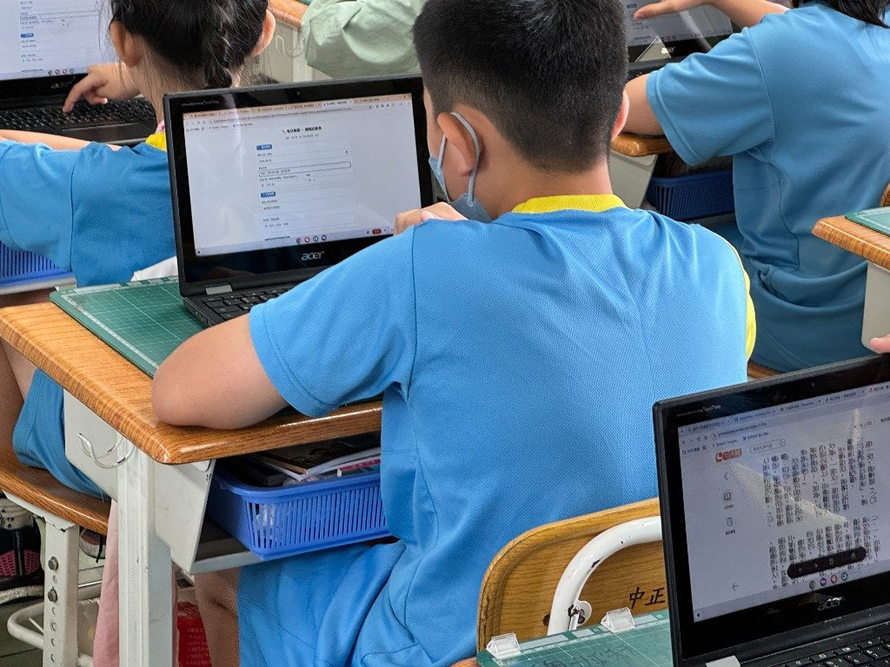
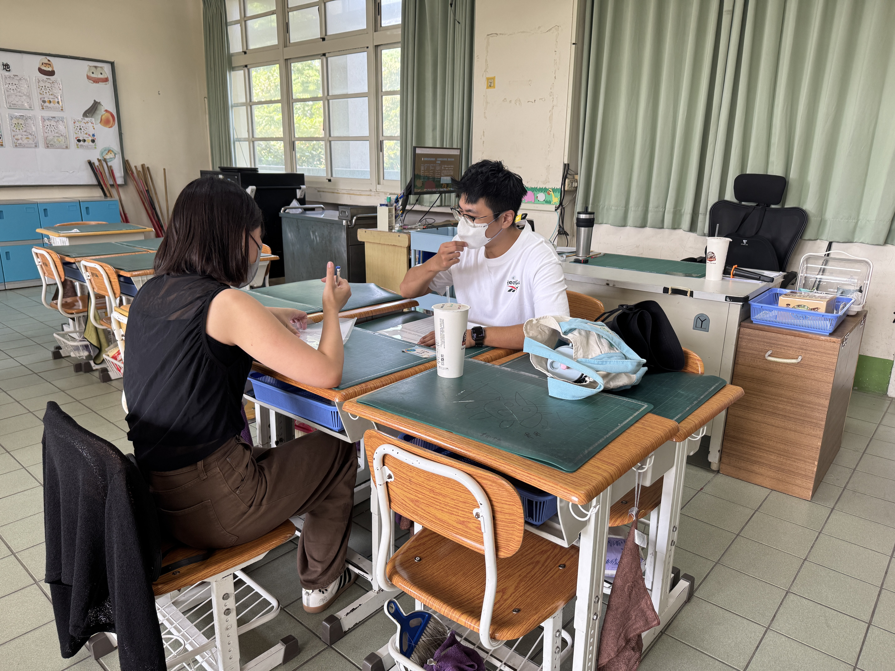

社群推動脈絡：踏實共備與 100% 執行
聚焦數學與科技跨域痛點，全體成員全員投入、落實課堂實踐與全額無瑕結報。
現場互動提問：提到國小「重量測量」，學生最常卡在哪？
教學痛點診斷：從「黑盒子讀數」到「物理具象」
傳統指針秤是封閉黑盒子，學生只會生硬讀刻度，缺乏真實的「重力量感」與「平衡算則」概念。
課程核心依據：十二年國教數學領域指標對齊
本教案精準扣合 108 課綱三年級常用量、單位換算與整數加減計算核心素養：
🎯 學習內容對齊 (Content Standards)
- n-II-8 重量測量：認識重量單位「公斤」與「公克」，使用天平與秤進行實測與估測。
- n-II-9 單位關係換算：理解 1 公斤 = 1000 公克，並進行單位間的化聚與直觀比較。
- n-II-2 兩步驟加減計算：在具體情境中解決包含公斤與公克的兩步驟加減應用問題。
🌟 STEAM 核心素養轉化
- 數-E-A1 具備量感：建立實體重量手感，破除「體積大就一定重」的直覺迷思。
- 科-E-B2 科技操作：熟練運用智高結構積木完成對稱力臂與承重托盤組裝。
- 自-E-C2 團隊探究：小組合作進行平衡校準、數據記錄與多元策略分享。
三節課循序進階架構：階梯式探究地圖
引導學生從「主觀手感」走向「客觀機關組裝」，最終邁向「數學加減微調平衡」：
第 1 節課堂實踐：徒手掂重引爆認知衝突
「老師，我覺得甲比較重！」「不對，明明是乙比較沉！」
🔥 課堂實況：主觀手感大混亂
課堂給予外觀大小不一的物品（保麗龍球、木積木、小鐵鎖、水瓶）。
學生徒手掂重排序時，全班出現高達 6 種完全相反的排序結果！
孩子們開始爭執，深刻體會到：「人手的肌肉記憶是有誤差的，我們需要一個公正的工具！」
💡 STEAM 探究起點：自主提問
學生自主歸納出三大工具需求：
1. 必須有支點，兩邊長度要完全一樣長（等臂概念）。
2. 兩邊托盤不能卡住，要能上下自由晃動。
3. 中間要有一個指針，告訴我們什麼時候才叫「剛剛好一樣重」。
第 2 節課堂實踐：智高積木四核心組件組裝
善用智高積木一凸五凹的結構特性，打造高精度、可靈敏擺盪的教學天平機關：
物理機制解析：天平傾斜與指針判定規則
建立直觀物理表徵：下降側為較重側，指針偏角反映質量差異。
⚖️ 傾斜動態的力學語言
• 左盤下沉：左邊物品重力大於右邊，力矩不平衡。
• 右盤下沉：右邊物品重力勝出。
• 指針居中（水平）：兩側向下重力恰好相等，達成力矩平衡。
• 微調滑塊：利用左右橫樑上的微調積木滑塊消除組裝微小結構公差。
📸 現場實況照片：分組實作

課堂迷思快問快答：破除「體積大就一定重」
請現場老師與夥伴預測：等臂天平左盤放 100g 保麗龍大球，右盤放 100g 實心鐵砝碼，結果會如何？
第 3 節課堂實踐：單位積木與加減微調挑戰
將「算則加減」具象為「積木的放入與取出」，數學算式在天平上活了起來！
🧱 非標準單位到標準單位
先以每個重 5 公克的智高黃色小單位積木作為「非標準砝碼」。
左盤放一塊橡皮擦，右盤一個一個加入小積木：
「1個、2個...加到第 6 個時天平剛好水平！」
➔ 橡皮擦重量 = 6 個小積木 = 30 公克！
🧮 算則的真實反饋
如果右盤放了 8 個積木導致右邊下沉？
孩子會主動說：「右邊太重了，要減去 2 個積木！」
減法（扣除）與加法（累加）不再是考卷上冷冰冰的符號，而是讓天平重返水平的魔法操作。
課堂深度探究：兩步驟加減法情境具象化
對齊課綱 n-II-2 兩步驟問題：天平傾斜時的兩種等價解題策略。
策略 A：較輕側「補足差額」（加法思維）
算式：120 - 100 = 20g
動作：在右盤加放 20g 單位積木，天平回正！
策略 B：較重側「移除多餘」（減法思維）
算式：180 - 30 = 150g
動作：將左盤額外 30g 移出，指針立刻回歸水平！
教學典範轉移：傳統讀秤 vs STEAM 動手調校
拖動下方滑桿，對照傳統教學困境與 STEAM 跨域實作的巨大轉變：
社群成果縱向延展 (一)：四年級 micro:bit 甩繩智慧教練
社群教師進一步將「重量與力學」延伸至四年級「科技體育」跨域整合：
🏃♂️ 甩繩軌跡神射手：數據驅動體育
• 加速度感測：將 micro:bit 封裝於大跳繩握把，即時捕捉三軸加速度。
• 離心力與節奏演算法：每甩動一圈自動濾波計數，即時透過無線廣播傳輸。
• 大螢幕即時回饋：體育課 8 人大跳繩現場看見甩繩穩定度數據，破除手痠亂甩的運動傷害盲點！
📸 科技體育課堂實境
社群成果縱向延展 (二)：世界機關王 (GM) 校隊梯隊
將天平結構力學，昇華為世界機關王競賽中的連鎖關卡自動觸發傳動：
⚙️ 複合機關整合工藝
• 斜面重力位能：金屬球沿軌道滾動加速。
• 天平觸發開關：球體滾入天平托盤，力矩失衡下沉，精準扣動下一道骨牌。
• 齒輪降速組：結合減速齒輪箱傳遞強大扭力，完成連鎖關卡 100% 觸發率！
📸 競賽關卡組裝與調校

亮眼推動成效與未來展望：讓 STEAM 在中正生根
客觀量化數據佐證，建立兼具學習成就感與團隊共好的長遠教學模式：
感謝各位評審與教育夥伴的聆聽與指導！敬請指教！